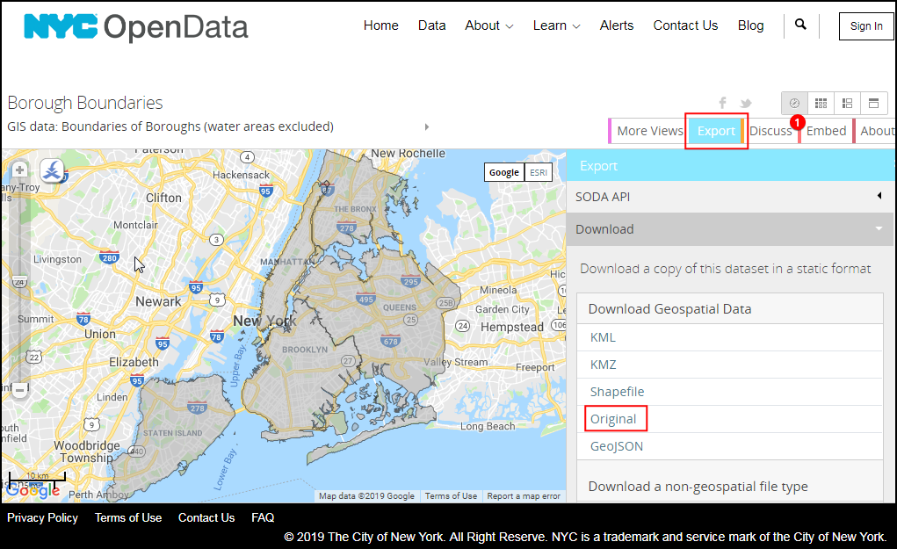

Ujaval Gandhi
Ujaval GandhiRäumliche Verknüpfungen erstellen (QGIS3)¶
Die räumliche Verknüpfung ist eine klassische GIS-Problemstellung: der Transfer von Attributwerten eines Layers auf einen anderen basierend auf der räumlichen Beziehung der Layer zueinander. In QGIS steht diese Funktionalität durch den Algorithmus Attribute nach Position verknüpfen zur Verfügung.
Überblick über die Aufgabe¶
Wir werden 2 Layer verwenden: eine Shapedatei der Stadtbezirksgrenzen von New York City und eine Shapedatei mit der Bewertung des Straßenbelages aller Straßen in New York City. Die erste Aufgabe besteht in der Bestimmung des mittleren Zustands der Straßen je Stadtbezirk. Dabei wird der Algorithmus räumliche Verknüpfung mit Zusammenfassung verwendet. Die zweite Aufgabe besteht darin, zu jeder Straße den Namen des Stadtbezirkes hinzuzufügen. Dies wird mit Hilfe einer räumlichen Eins-zu-viele-Verknüpfung erreicht.
Weitere Fähigkeiten, die wir erlernen¶
Erstellung von Filtern, um bestimmte Features zeitweise von der Berechnung auszuschließen
Beschaffung der Daten¶
NYC Open Data Portal ist eine exzellente Datenquelle für frei verfügbare Daten zu New York City.
Mit Hilfe der Exportoption des Portals laden wir folgende Daten herunter: Borough Boundaries.
Mit Hilfe der Export Option des Portals laden wir auch noch diese Daten herunter: Street Pavement Rating.

Der Einfachheit halber können wir eine Kopie der Datensätze unter folgenden Links herunterladen:
Datenquelle [CITYOFNY]
Arbeitsablauf¶
Im QGIS Browser suchen wir die Datei
nybb_19a.zipund erweitern sie. Wir wählen den Layernybb_19a/nybb.shpund ziehen ihn in den Arbeitsbereich. Es handelt sich um einen Polygonlayer mit den Grenzen der Stadtbezirke von New York City.

Als nächstes erweitern wir die Datei
V_SSS_SEGMENTRATING_1.zipund wählen den Layerdot_V_SSS_SEGMENTRATING_1_20190129.shp; auch diesen fügen wir zum Arbeitsbereich hinzu. Dieser Linienlayer enthält alle Straßen der Stadt.

Wir untersuchen die verfügbaren Attribute der im Layer
dot_V_SSS_SEGMENTRATING_1_20190129enthaltenen Objekte. Per Rechtsklick öffnen wir dasKontextmenü und wählen Attributtabelle öffnen.

Wir sehen ein Attribut mit der Bezeichnung
Rating_B. Dieses Attribut mit Werten zwischen 0 und 10 enthält die Bewertung des Zustandes dieses Straßenabschnittes. Das AttributRatingWordenthält eine beschreibende Bewertung. Wir können das FeldRating_Bnutzen, um die mittlere Bewertung zu bestimmen.

Für einige Objekte ist die Bewertung
NRvergeben worden. Diese Abschnitte sind nicht bewertet. Sie in die Analyse mit einzubeziehen, wäre nicht korrekt. Bevor wir die räumliche Verknüpfung herstellen, erstellen wir einen Filter, um diese Datensätze auszuschließen. Dazu öffnen wir per Rechtsklick das Kontextmenü des Layersdot_V_SSS_SEGMENTRATING_1_20190129und wählen Filter….

Im Fenster Abfrageerstellung geben wir folgenden Ausdruck ein, um alle Datensätze mit dem Wert
NRzu selektieren. Man kann den Ausdruck auch interaktiv mithilfe der einträge bzw. Schaltflächen Felder, Operatoren und der Auswahl der passenden Werte erzeugen. Wir betätigen die Schaltfläche OK.
"RatingWord" != 'NR'
Wir merken, dass der Layer
dot_V_SSS_SEGMENTRATING_1_20190129nun ein Filtersymbol hat, welches einen aktiven Filter für diesen Layer anzeigt. Jetzt können wir eine räumliche Verknüpfung zum Layer herstellen und wählen dazu .

Wir suchen den Algorithmus und starten ihn per Doppelklick.

Im Dialogfenster Attribute nach Position verknüpfen (Zusammenfassung) wählen wir den Layer
nybbals Eingabelayer. Den Layer mit den Straßendot_V_SSS_SEGMENTRATING_1_20190129tragen wir unter Durch Vergleich mit ein. Die Einstellungen unter Ort der Objekte können wir unverändert beischneidetbelassen. Wir betätigen die schaltfläche … neben Zusammenzufassende Felder.

Bemerkung
Ein Tipp, um den korrekten Eingabelayer festzulegen: Der Eingabelayer ist derjenige, der durch die räumliche Verknüpfung durch neue Attribute erweitert wird. Da wir die mittlere Bewertung zum Layer der Stadtbezirke hinzufügen wollen, ist dieser Layer der Eingabelayer.
Wir wählen
Rating_Bund bestätigen mit OK.

Analog betätigen wir die Schaltfläche … neben Zu berechnende Zusammenfassungen.

Wir wählen
Durchschnittals Operation für die Zusammenfassung und bestätigen mit OK. Jetzt können wir die Berechnung starten und betätigen dazu die Schaltfläche Starte.

Der Algorithmus verarbeit die Objekte und erstellt die räumliche Verknüpfung. Wir vergewissern uns, dass die Verabeitung erfolgreich abgeschlossen wurde und betätigen die Schaltfläche Schließen.

Zurück im QGIS-Fenster sehen wir einen neuen Layer
Zusammengefasster Layer, der dem Arbeitsbereich hinzugefügt wurde. Wir öffnen die Attributtabelle dieses Layers und bemerken eine neue SpalteRating_B_mean, die die mittlere Bewertung aller Straßen enthält, die einen Stadtbezirk überschneiden.

Jetzt wenden wir ein umgekehrtes Verfahren an. Manchmal benötigen wir Attribute eines anderen Layers basierend auf dessen räumlicher Beziehung, ohne dass eine Summenbildung erfolgen muss. Wir können in diesem Fall den Algorithmus
Attribute nach Position zusammenführenverwenden. Die Aufgabe besteht darin, für alle Objekte im Straßenlayer den zugehörigen Stadtbezirk zu ermitteln. Bevor wir die Berechnung beginnen, entfernen wir den Filter vom Layerdot_V_SSS_SEGMENTRATING_1_20190129. Dazu klicken wir auf das Filtersymbol und betätigen im Fenster Abfrageerstellung die Schaltfläche Löschen. Wir bestätigen das mit OK.

Wir schalten die Sichtbarkeit des Layers
Zusammengefasster Layerim Layer-Panel ab und wählen in den Verarbeitungswerkzeugen . Den Algorithmus starten wir durch Doppelklick.

Wir wählen
dot_V_SSS_SEGMENTRATING_1_20190129unter Mit Objekten verknüpfen in undnybbunter Durch Vegleich mit. Wir können die Einstellung Ort der Objekte auf der Voreinstellungschneidetbelassen. wir betätigen die Schaltfläche … neben Hinzuzufügende Felder, wählenBoroNameund bestätigen mit OK.
Ein Linienabschnitt kann u. U. in mehreren Stadtbezirken liegen. Wir wählen daher für Verknüpfungstyp
Separates Objekt für jedes passende Objekt erzeugen (eins-zu-vielen)und betätigen die Schaltfläche Starte.

Nachdem die Berechnung abgeschlossen wurde, öffenen wir die Attributtabelle des neu hinzugefügten Layers
Zusammengefasster Layer. Wir sehen, dass das neue AttributBoroNamezu jedem Straßenobjekt hinzugefügt wurde.

If you want to give feedback or share your experience with this tutorial, please comment below. (requires GitHub account)